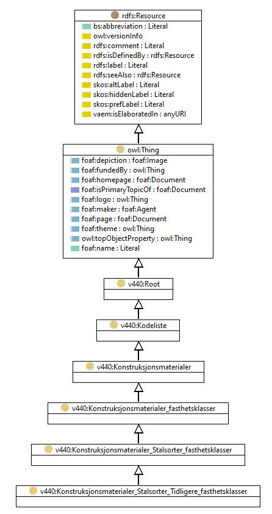

http://rdf.vegdata.no/v440-owl#Konstruksjonsmaterialer_Stalsorter_Tidligere_fasthetsklasser
Class v440:Konstruksjonsmaterialer_Stalsorter_Tidligere_fasthetsklasser

v440:avsnitt
V-8.6
v440:kapitel
V-8
v440:kode
-
rdf:type
owl:Class
rdfs:label
Stålsorter - Tidligere fasthetsklasser
rdfs:subClassOf
v440:Konstruksjonsmaterialer_Stalsorter_fasthetsklasser
Instances
v440:Konstruksjonsmaterialer_Stalsorter_Tidligere_fasthetsklasser_Hulprofilstal_kvalitet_St_44-3N
,
v440:Konstruksjonsmaterialer_Stalsorter_Tidligere_fasthetsklasser_Hulprofilstal_kvalitet_St_52-3N
,
v440:Konstruksjonsmaterialer_Stalsorter_Tidligere_fasthetsklasser_Sveisbare_finkornbehandlete_konstruksjonsstal_kvalitet_E_355
,
v440:Konstruksjonsmaterialer_Stalsorter_Tidligere_fasthetsklasser_Sveisbare_finkornbehandlete_konstruksjonsstal_kvalitet_E_420
,
v440:Konstruksjonsmaterialer_Stalsorter_Tidligere_fasthetsklasser_Ulegert_konstruksjonsstal_kvalitet_RSt_37-2
,
v440:Konstruksjonsmaterialer_Stalsorter_Tidligere_fasthetsklasser_Ulegert_konstruksjonsstal_kvalitet_St_33
,
v440:Konstruksjonsmaterialer_Stalsorter_Tidligere_fasthetsklasser_Ulegert_konstruksjonsstal_kvalitet_St_37
,
v440:Konstruksjonsmaterialer_Stalsorter_Tidligere_fasthetsklasser_Ulegert_konstruksjonsstal_kvalitet_St_37-2
,
v440:Konstruksjonsmaterialer_Stalsorter_Tidligere_fasthetsklasser_Ulegert_konstruksjonsstal_kvalitet_St_37-3N
,
v440:Konstruksjonsmaterialer_Stalsorter_Tidligere_fasthetsklasser_Ulegert_konstruksjonsstal_kvalitet_St_37-3U
,
v440:Konstruksjonsmaterialer_Stalsorter_Tidligere_fasthetsklasser_Ulegert_konstruksjonsstal_kvalitet_St_42
,
v440:Konstruksjonsmaterialer_Stalsorter_Tidligere_fasthetsklasser_Ulegert_konstruksjonsstal_kvalitet_St_42-2
,
v440:Konstruksjonsmaterialer_Stalsorter_Tidligere_fasthetsklasser_Ulegert_konstruksjonsstal_kvalitet_St_44
,
v440:Konstruksjonsmaterialer_Stalsorter_Tidligere_fasthetsklasser_Ulegert_konstruksjonsstal_kvalitet_St_44-2
,
v440:Konstruksjonsmaterialer_Stalsorter_Tidligere_fasthetsklasser_Ulegert_konstruksjonsstal_kvalitet_St_44-3N
,
v440:Konstruksjonsmaterialer_Stalsorter_Tidligere_fasthetsklasser_Ulegert_konstruksjonsstal_kvalitet_St_44-3U
,
v440:Konstruksjonsmaterialer_Stalsorter_Tidligere_fasthetsklasser_Ulegert_konstruksjonsstal_kvalitet_St_52
,
v440:Konstruksjonsmaterialer_Stalsorter_Tidligere_fasthetsklasser_Ulegert_konstruksjonsstal_kvalitet_St_52-3N
,
v440:Konstruksjonsmaterialer_Stalsorter_Tidligere_fasthetsklasser_Ulegert_konstruksjonsstal_kvalitet_St_52-3U
,
v440:Konstruksjonsmaterialer_Stalsorter_Tidligere_fasthetsklasser_Ulegert_konstruksjonsstal_kvalitet_USt_37-2
References
as rdfs:subClassOf (
v440:Konstruksjonsmaterialer_Stalsorter_Tidligere_fasthetsklasser_Ulegert_konstruksjonsstal
,
v440:Konstruksjonsmaterialer_Stalsorter_Tidligere_fasthetsklasser_Hulprofilstal
,
v440:Konstruksjonsmaterialer_Stalsorter_Tidligere_fasthetsklasser_Sveisbare_finkornbehandlete_konstruksjonsstal
)
Generated with
TopBraid Composer
by
TopQuadrant, Inc.